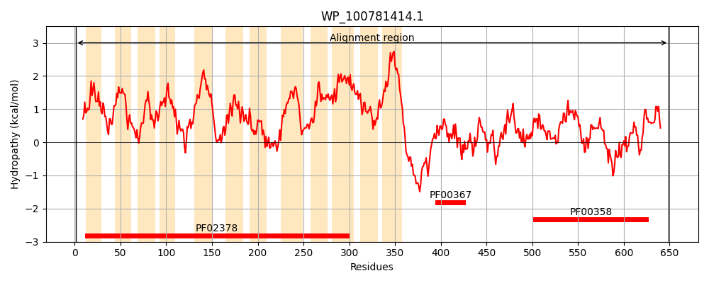
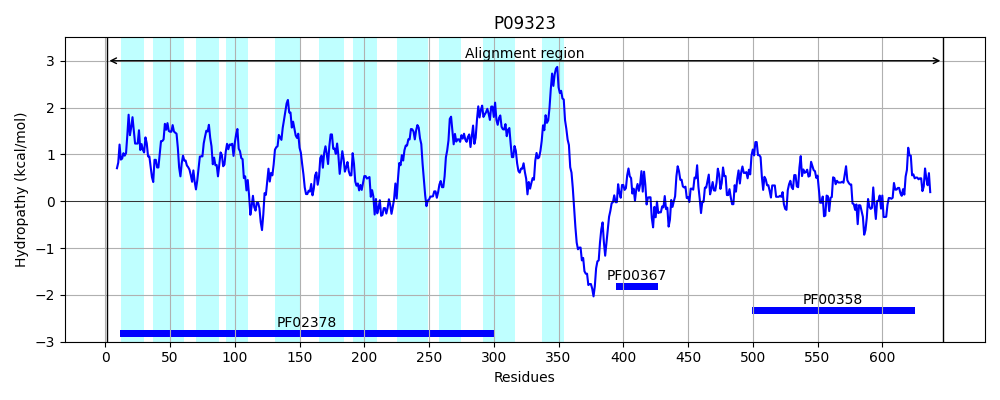
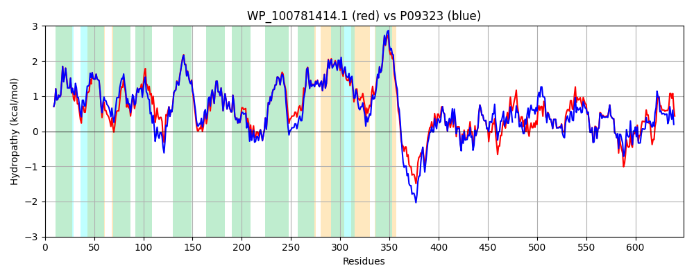

Hit Accession: P09323
Hit TCID: 4.A.1.1.2
Hit Description: gnl|BL_ORD_ID|8506 gnl|TC-DB|P09323|4.A.1.1.2 PTS SYSTEM, N-ACETYLGLUCOSAMINE-SPECIFIC IIABC COMPONENT (EIIABC-NAG) (N-ACETYLGLUCOSAMINE-PERMEASE IIABC COMPONENT) (PHOSPHOTRANSFERASE ENZYME II, ABC COMPONENT) (EC 2.7.1.69) (EII-NAG) - Escherichia coli.
Mach Len: 649
e:0.000000
Query TMS Count : 12
Hit TMS Count: 11
TMS-Overlap Score: 10.650000
Predicted Substrates:CHEBI:28009;N-acetyl-beta-D-glucosamine
BLAST Alignment:
Score: 2956 , Bit scores: 1143 bits, E-value: 0.0e+00, Alignment length: 649, Percentage identity: 89
Query: 1 MNILGFFQRLGRALQLPIAVLPVAALLLRFGQPDLLNVPFIAQAGGAIFDNLALIFAIGVASSWSKDNAGSAALAGAVGYFVMTKAMVTINPEINMGVLAGIITGLVAGAVYNRWAGIKLPDFLSFFGGKRFVPIATGFFCLILAAIFGYVWPPVQHAIHSGGEWIVSAGALGSGIFGFINRLLIPTGLHQVLNTIAWFQIGEFTNAAGAVFHGDINRFYAGDGTAGMFMSGFFPIMMFGLPGAALAMYLAAPKARRPMVGGMLLSVAITAFLTGVTEPLEFLFMFLAPLLYLLHAVLTGISLFIATALGIHAGFSFSAGAIDYVLMYSLPAASKNVWMLLVMGVVFFFVYFLLFSAVIRMFNLKTPGREDKAADVVTEEANSNTEEGLTQLATSYIAAVGGTDNLKAIDACITRLRLTVGDSAKVNDAACKRLGASGVVKLNKQTIQVIVGAKAESIGDEMKKVVTRGPVAAAAAAPAGNVATAAPAAKPQAVANAKTVESLISPITGDVVALEQVPDEAFASKAVGDGIAVKPTSNIVVAPAAGTVVKIFNTNHAFCLETNNGAEIVVHMGIDTVALEGKGFKRLVEEGTDVKAGEPILEMDLDFLNANARSMISPVVCSNSDDYSALVILASGKVVAGQTPLYEIK 649
MNILGFFQRLGRALQLPIAVLPVAALLLRFGQPDLLNV FIAQAGGAIFDNLALIFAIGVASSWSKD+AG+AALAGAVGYFV+TKAMVTINPEINMGVLAGIITGLV GA YNRW+ IKLPDFLSFFGGKRFVPIATGFFCL+LAAIFGYVWPPVQHAIH+GGEWIVSAGALGSGIFGFINRLLIPTGLHQVLNTIAWFQIGEFTNAAG VFHGDINRFYAGDGTAGMFMSGFFPIMMFGLPGAALAMY AAPK RRPMVGGMLLSVA+TAFLTGVTEPLEFLFMFLAPLLYLLHA+LTGISLF+AT LGIHAGFSFSAGAIDY LMY+LPAAS+NVWMLLVMGV+FF +YF++FS VIRMFNLKTPGREDK ++VTEEANSNTEEGLTQLAT+YIAAVGGTDNLKAIDACITRLRLTV DSA+VND CKRLGASGVVKLNKQTIQVIVGAKAESIGD MKKVV RGPVAAA+A ATAAP AKPQAV NA ++ L+SPITGDVVAL+QVPDEAFASKAVGDG+AVKPT IVV+PAAGT+VKIFNTNHAFCLET GAEIVVHMGIDTVALEGKGFKRLVEEG V AG+PILEMDLD+LNANARSMISPVVCSN DD+S L+I A G +VAGQTPLYEIK
Sbjct: 1 MNILGFFQRLGRALQLPIAVLPVAALLLRFGQPDLLNVAFIAQAGGAIFDNLALIFAIGVASSWSKDSAGAAALAGAVGYFVLTKAMVTINPEINMGVLAGIITGLVGGAAYNRWSDIKLPDFLSFFGGKRFVPIATGFFCLVLAAIFGYVWPPVQHAIHAGGEWIVSAGALGSGIFGFINRLLIPTGLHQVLNTIAWFQIGEFTNAAGTVFHGDINRFYAGDGTAGMFMSGFFPIMMFGLPGAALAMYFAAPKERRPMVGGMLLSVAVTAFLTGVTEPLEFLFMFLAPLLYLLHALLTGISLFVATLLGIHAGFSFSAGAIDYALMYNLPAASQNVWMLLVMGVIFFAIYFVVFSLVIRMFNLKTPGREDKEDEIVTEEANSNTEEGLTQLATNYIAAVGGTDNLKAIDACITRLRLTVADSARVNDTMCKRLGASGVVKLNKQTIQVIVGAKAESIGDAMKKVVARGPVAAASA--EATPATAAPVAKPQAVPNAVSIAELVSPITGDVVALDQVPDEAFASKAVGDGVAVKPTDKIVVSPAAGTIVKIFNTNHAFCLETEKGAEIVVHMGIDTVALEGKGFKRLVEEGAQVSAGQPILEMDLDYLNANARSMISPVVCSNIDDFSGLIIKAQGHIVAGQTPLYEIK 647 | Protein Hydropathy Plots: |
|---|
|  |  |
Pairwise Alignment-Hydropathy Plot:
|
|---|
|  |